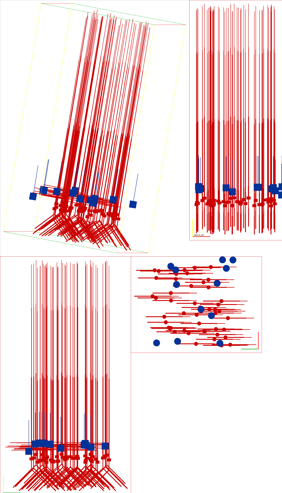
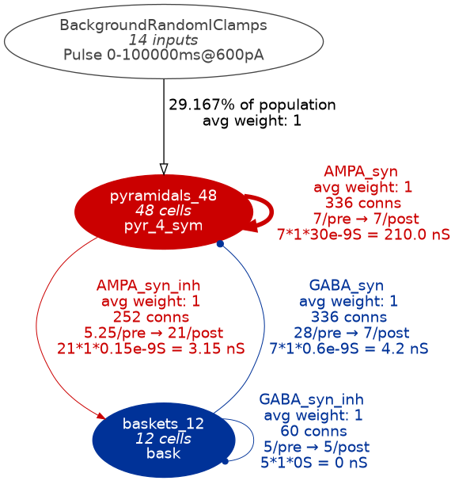
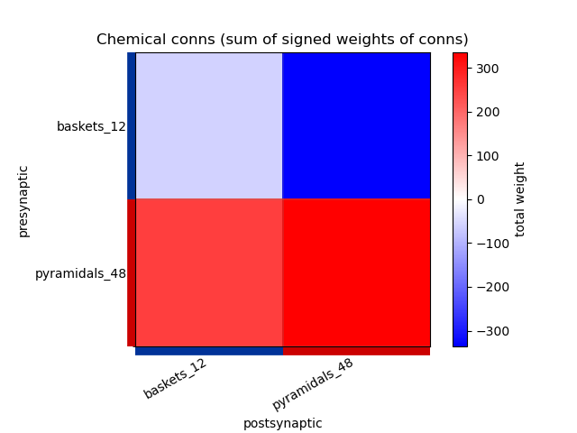
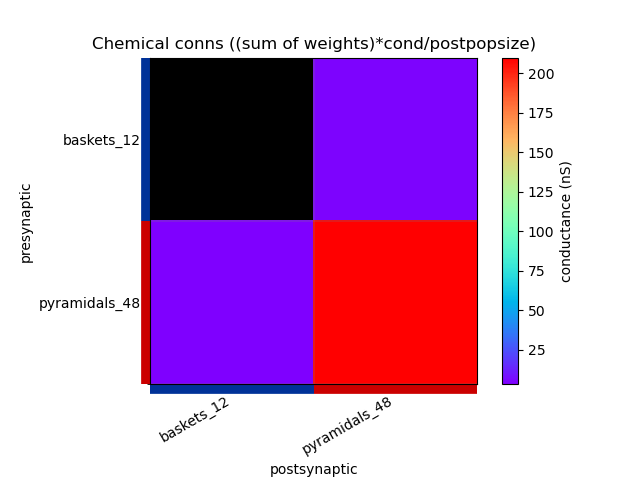
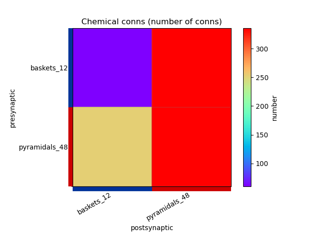
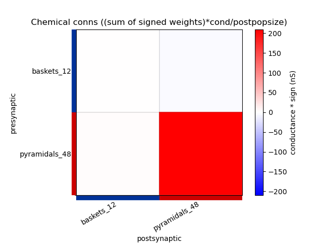
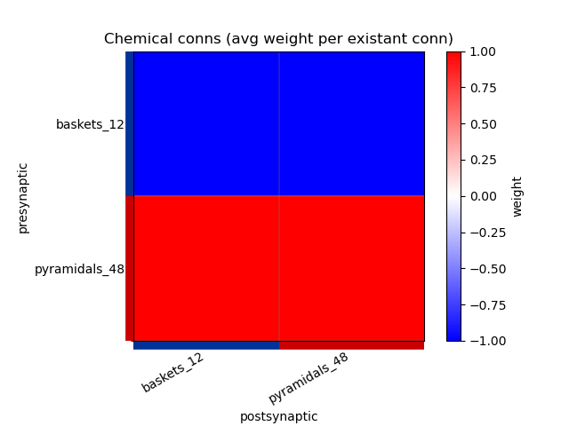

Visualising NeuroML Models¶
A number of the NeuroML software tools can be used to easily visualise models described in NeuroML.
(userdoc:visualising_models:pyNeuroML_cli)
Using pyNeuroML on the command line¶
pyNeuroML includes a number of command line tools, some of which are useful for quickly obtaining information about the specified NeuroML model.
Get a quick summary with pynml-summary¶
You can get a quick summary of your NeuroML model using pynml-summary:
Usage:
pynml-summary <NeuroML file>
For example, to get a quick summary of the Primary Auditory Cortex model by Dave Beeman (see it here on Open Source Brain), one can run:
pynml-summary MediumNet.net.nml
*******************************************************
* NeuroMLDocument: network_ACnet2
*
* PulseGenerator: ['BackgroundRandomIClamps']
*
* Network: network_ACnet2 (temperature: 6.3 degC)
*
* 60 cells in 2 populations
* Population: baskets_12 with 12 components of type bask
* Locations: [(372.5585, 75.3425, 459.2106), ...]
* Properties: color=0.0 0.19921875 0.59765625;
* Population: pyramidals_48 with 48 components of type pyr_4_sym
* Locations: [(64.2564, 0.6838, 94.8305), ...]
* Properties: color=0.796875 0.0 0.0;
*
* 984 connections in 4 projections
* Projection: SmallNet_bask_bask from baskets_12 to baskets_12, synapse: GABA_syn_inh
* 60 connections: [(Connection 0: 3:0(0.41661) -> 0:0(0.68577)), ...]
* Projection: SmallNet_bask_pyr from baskets_12 to pyramidals_48, synapse: GABA_syn
* 336 connections: [(Connection 0: 10:0(0.05824) -> 0:6(0.02628)), ...]
* Projection: SmallNet_pyr_bask from pyramidals_48 to baskets_12, synapse: AMPA_syn_inh
* 252 connections: [(Connection 0: 1:0(0.89734) -> 0:1(0.09495)), ...]
* Projection: SmallNet_pyr_pyr from pyramidals_48 to pyramidals_48, synapse: AMPA_syn
* 336 connections: [(Connection 0: 14:0(0.52814) -> 0:3(0.10797)), ...]
*
* 14 inputs in 1 input lists
* Input list: BackgroundRandomIClamps to pyramidals_48, component BackgroundRandomIClamps
* 14 inputs: [(Input 0: 37:0(0.500000)), ...]
*
*******************************************************
View the 3D structure of the model using pynml¶
You can generate an image of the 3D structure of the NeuroML model using pynml:
Usage:
pynml -png/-svg <NeuroML file>
For example, to generate a PNG image of the Auditory Cortex model used above, we can use (use -svg to generate a vectorised SVG image instead of a PNG):
pynml -png MediumNet.net.nml
This generates the following image showing different views of the network :
{kind=link}

Fig. 5 Graphical view of the Auditory Cortex model generated with pynml¶
Open Source Brain uses NeuroML.
The Open Source Brain platform generates the interactive visualisations from NeuroML sources. See the Auditory Cortex model on Open Source Brain here.
View the connectivity graph of the model using pynml¶
You can generate an image of the 3D structure of the NeuroML model using pynml:
Usage:
pynml <NeuroML file> -graph <level, engine>
For example, to generate a PNG image of the Auditory Cortex model used above, we can use:
pynml MediumNet.net.nml -graph 1d
This generates the following image showing different views of the network :
Fig. 6 Level 1 network graph generated by pynml¶
You can modify the level of detail included in the graph by using different values of levels. For example, this command generates a level 5 graph:
pynml MediumNet.net.nml -graph 5d
{kind=link}

Fig. 7 Level 5 network graph generated by pynml¶
View the connectivity matrices of the model using pynml¶
You can generate the connectivity matrices of projections between neuronal populations of the NeuroML model using pynml:
Usage:
pynml <NeuroML file> -matrix <level>
For example, to generate a PNG image of the connectivity matrices in the Auditory Cortex model used above, we can use:
pynml MediumNet.net.nml -matrix 1
This generates the following images showing different views of the connectivity matrices in the network :
{kind=link}

Fig. 8 Connectivity matrix generated by pynml: sum of signed weights¶
{kind=link}

Fig. 9 Connectivity matrix generated by pynml: average conduction received by post-synaptic neurons¶
{kind=link}

Fig. 10 Connectivity matrix generated by pynml: number of connections¶
{kind=link}

Fig. 11 Connectivity matrix generated by pynml: average conductance received by post-synaptic neurons¶
{kind=link}

Fig. 12 Connectivity matrix generated by pynml- average weight per connection¶
View graph of the simulation instance of the model using pynml¶
When you have created a simulation instance of the NeuroML model using LEMS, you can also visualise this using pynml:
Usage:
pynml <LEMS simulation file> -lems-graph
For example, to generate a PNG image of LEMS simulation instance of the Auditory Cortex model used above, we can use:
pynml LEMS_MediumNet.xml -lems-graph
This generates this image (please click to open: it is too large to display in the page).
{kind=link}